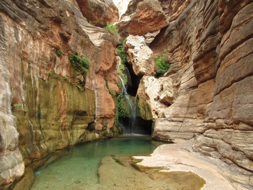

Schedule a Rafting Trip Today!
Schedule HereThe California Salmon River, also known as the "Cal Salmon", is a river in the Northern California Coast Range that's known for its whitewater rafting, clear water, and canyon.


Cherry Creek's geology creates its mighty whitewater fervor. This granite-walled canyon funnels the river so it's fast and steep, dropping more than 100 vertical feet per mile.
The Tuolumne River, designated in 1984, originates high in the Sierra Nevada on the eastern side of Yosemite National Park and flows westward.

Find out what's right for you!
We offer a collection of different experiences, suited to your budget and your experience level.
| River | Price | Skill Level |
|---|---|---|
| California Salmon | $ | Beginner |
| Cherry Creek | $$ | Intermediate |
| Tuolumne River | $$$ | Advanced |
| Goodwin Canyon | $$$$ | Master |